UI/UX
筆者: 海老原 賢次（ebi311@gmail.com）
作成日: 2022-05-19
更新履歴:
- 2023-09-26:
- ソシオメディアの記事を追加した
- Lighthouse の記述を追記した
- 2022-05-19: 新規作成
UX は、User Experience つまりユーザーがシステムを通して体験する、ということです。UXを向上させるというのは、ユーザーが目的を達成する初めから終わりまで気持ちよく作業できる、ということになります。
例えば、ECサイトで商品を購入する場合、TVや他のサイトで広告を見る、サイトへのアクセス、認証、商品の検索や閲覧といった情報収集、注文、商品が届くまでの体験、ということになります。
Webサイトで商品をすぐに見つけられて注文がスムースにいっても、商品の到着が遅かったり、梱包が雑だったりすると、UXは低くなってしまいます。サービス全体でUXは考えるものです。
ですが、ここではWebアプリの開発を主要としていますので、UIの観点からUXのポイントを紹介します。
ここで謳っているのは、UXの一部にすぎない、ということを認識しておいてください。
参考: ソシオメディア | ヒューマンインターフェース ガイドライン (1/5)
論理的なメニュー構成、ナビゲーションを設計する
メニューやナビゲーション、画面構成は、ユーザーが認識している”モノ”(オブジェクト)に合わせた構成とするのが良いとされています。 (ただし、それがそぐわないケースもあります。)
これをオブジェクト指向UI（OOUI）設計と呼ばれており、まずはこれを学習することを推奨します。
- オブジェクト指向UIデザイン ――使いやすいソフトウェアの原理：書籍案内｜技術評論社
- OOUI(オブジェクト指向UI)とは？デザイナーなら知っておきたいメリットや設計方法まで解説！ | 株式会社ニジボックス
ユースケースを意識して画面を設計する
論理的なメニューとして、データ構造を単純に画面に落としたものを見ることが往々にしてあります。データ中心は、システムの都合であり、往々にしてユーザーが認識している構造と異なる場合があります。
OOUI による設計では、システムのデータ構造は頭から忘れて、ユーザーが認識している構造を画面に落とすことを意識します。
システムのデータ構造でページ構成や一覧を示してしまい、１つの画面で複数のロール、多くのユースケースを賄ってしまうと、画面が複雑で情報が氾濫しユーザーが混乱してしまいます。
ユニバーサルカラーデザインに配慮する
ユニバーサルカラーデザイン（UCD）は、SDGs にも挙げられている、「誰一人取り残さない」精神に直接通じるものです。色覚は人により異なるもので、色の組み合わせによっては見えづら行こともあります。
これらは、良いもの悪いものがパターンとして定義されていますので、それを把握しておく必要があります。
また、色覚特性に合わせた見え方をシミュレートするツールもあるので、これらを使用してチェックすることを推奨します。
ツール
顧客、プロダクトオーナー、プロダクト管理区にUIを決めさせない
UIは、専門的な知識が必要です。ビジネスの要件はプロダクトオーナーから出てきますが、適切なUIが出てくるとは限りません。多くの場合、管理する側の視点が反映されたものになります。
顧客側からUIを提示してくる場合もありますが、それが顧客側で専門チームによって十分に検討されているものであれば良いのですが、そうでない場合は開発側での検討が必要でしょう。（それらの作業が必要かどうか、見積もり時点でわかっている必要があるので注意です。）
具体的な入力方法ではなく、何に注目してほしいのか、何をなんのために入力してほしいのかなど、要求や要件をヒヤリングするようにし、ユーザーやビジネス側を一緒に合意を取りながら一緒に勧めていきましょう。
利用者の視線誘導に意識した構成にする
ページのコンテンツを配置するときに、利用者の視線がまずどこに行ってどう流れるか、を意識します。
また、一般的なパターンとして、Z型、F型というのもあります。
これらを意識して配置すると、無意識に読みやすい、扱いやすい（考慮しないと、逆に読みにくい）サイトになります。
覚えておきたいUIデザインの基本！【８つの視覚誘導編】 | Webマーケティングメディア「Grab」
華美なUI
「確かに良い銃だ。しかしそのエングレーブは何のタクティカルアドバンテージも無い。実用と観賞用は違う」 - メタルギアソリッド３ より
UIの見た目の良さというのは、UXとして決して意味がない訳では無いですが、UXの一部でしかありません。コンシューマー向けのサイトで、会社のブランドイメージなどをアピールしたい場合には重要な要件となるでしょう。
しかし、業務アプリでは使い勝手の良さが最優先となるでしょう。いくら見た目が斬新でスタイリッシュでも、ユーザーが使いづらい、分かりづらいと感じてしまうと失敗です。
装飾の意味を考えながら設計しましょう。
意味のあるアニメーション
アニメーションを意味なく技術アピールのために使用してしまうと、ユーザーを必要以上に待たせることとなり、不適切です。
しかし、状態が変化したことや、どのような操作ができるのかを示したり、重要な情報を知らせるためにユーザーの気を引いたりするなど、意味のあるアニメーションを利用するのは非常に良い方法です。
良いUXのために、意味のあるアニメーションをUIに使う: Adobe MAX セッションレポート #AdobeMAX
UXデザインにアニメーションを導入するときに注意すべきこと | UX MILK
- ボタンクリックのフィードバックとしてのアニメーション
-
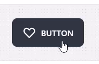
一貫性を持たせる
フォントのサイズ、余白、レイアウトがページごとのバラバラだと、一貫性がなくとても読みづらいサイトになってしまいます。
ポイントとしては、下記が挙げられます。
- ヘッダ、フッタなどのページレイアウト、部品のデザインなどは統一ため、スタイルを一元化する
- カラーパレットを設ける
- フォント、余白のサイズを統一する
- アイコンを使用する場合、スタイルを合わせる
決めたルールで、用途・要件で使いにくくなる場合があります。ルールに固執するのではなく、ルールを見直すことも大事です。
スタイルを一元化する
スタイルを一元化するため、テーマを設定します。さまざまな項目を定数として置きます。
下で説明する、カラーパレットや余白などをサイズもテーマとして指定します。
CSS in JS の場合は、プログラム内で定数を定義します。
CSS を書く場合はCSS変数を利用します。
また、段落やブロックの間隔が場所ごとにバラバラでも、統一感がなくなります。マージンやパディングの大きさは、ステップ幅を決めておくと良いです。例えば、0.25rem 刻みで設定する、などです。
Material UI や Tailwind CSSなどのフレームワークを使用する場合は、それぞれのテーマ機能を利用します。
カラーパレット
Webサイトで使われている色が多すぎると、見づらいだけでなく、ユーザーに注目してほしいところに注目してもらえないこともあります。色を限定することで、ブランディングとしてそのサイトを印象づけることもできます。
カラーパレットを用意し、その他の色は極力使用しないようにします。
色の異種類としては、Primary, Secondary それぞれの３種類の明るさと info, Warning, danger 、それぞれの背景色、文字色を定義すると良いでしょう。
カラーパレットを検討するためのツールがありますので、これらを使うことをお勧めします。
Material Design Color Tool 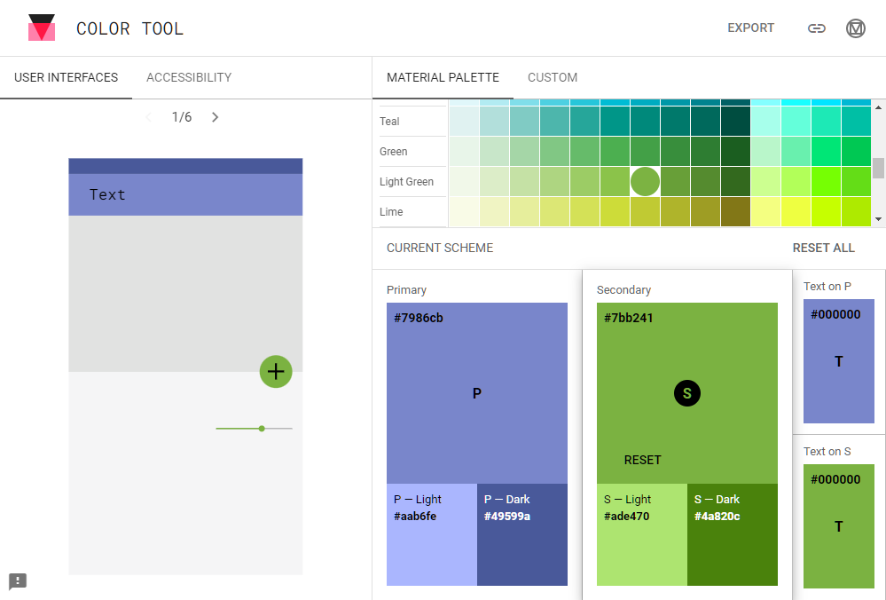
daisyUI Theme Generator — Tailwind CSS Components
カラーホイール、カラーパレットジェネレーター| Adobe Color 分割補色かトライアドで作成するといい感じのものが作れると思います。
レイアウトと余白の大きさ
余白を適当に決めるのではなく、4または8の倍率のピクセル(px)で定義すると良いでしょう。
Spacing methods - Material Design
Material Design - Baseline Grid より 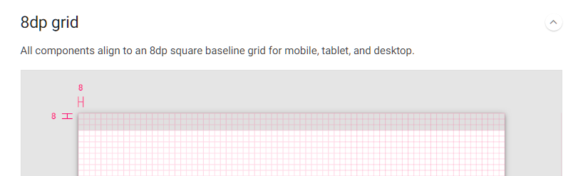
また、レイアウトとして画面全体を仮想的なグリッドに見立てて、それに合わせ配置すると統一感がさらに生まれます。
Material Design - Responsive layout grid より 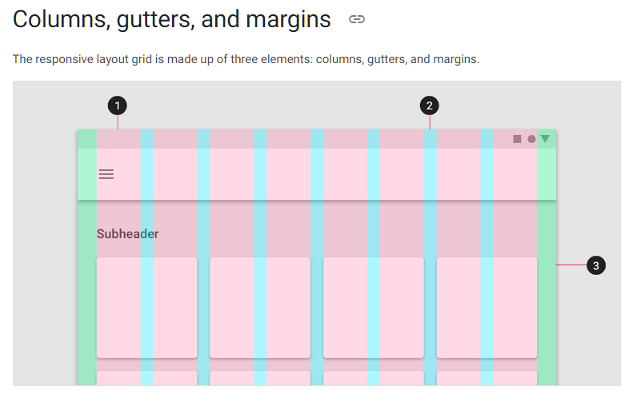
Material Design ガイドを御覧ください。
Responsive layout grid - Material Design
Tailwind CSS では、4の倍数でクラスが指定されているので、これを利用するようにしましょう。
Customizing Spacing - Tailwind CSS
関連のあるものを近づける、グループ化する
人は、近い者同士を勝手にグループ化します。関連する情報またはボタンなどのフォームは近い位置に配置するようにします。
また、明示的に枠や背景色で囲った場合、その範囲でグループを認識するようになりやすいです。
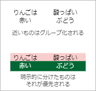
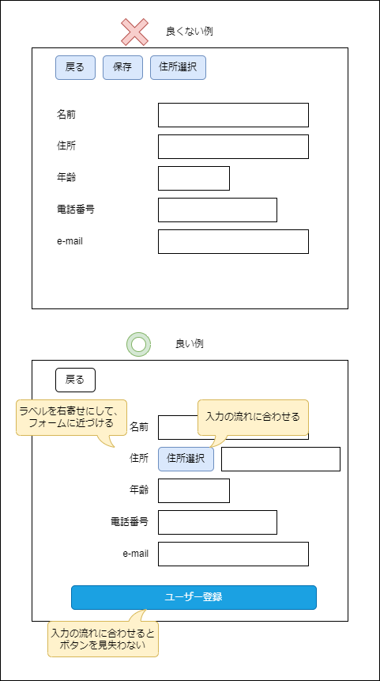
一覧 = テーブル にとらわれない
データの検索結果など、特に検討もなくテーブルにするのはやめましょう。特に、データの構造をそのまま表現するのは、ユーザーにとっては理解しにくいです。
その一覧の目的、最も重要な情報はなにか、等を考えて、適切なレイアウトを選びましょう。
また、テーブルはレスポンシブに対応しづらいです。画面の幅が小さい場合に、横スクロールが発生してしまします。
テーブルは、行や列ごとに比較する場合には適しています。
目的を持ってレイアウトを検討しましょう。
もし、複数の目的でりようされ、それによって重陽な項目が異なる場合、一覧の画面を分ける選択も検討します。
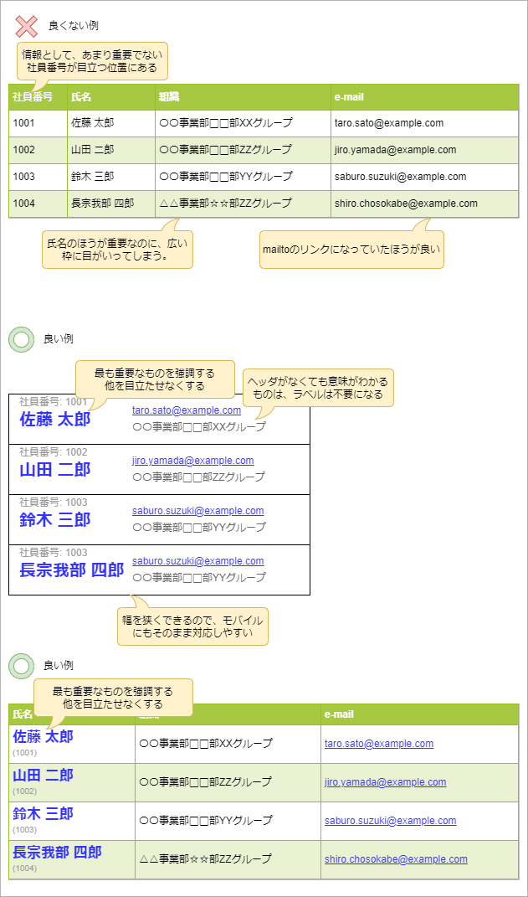
利用者の経験を裏切らない
他のWebサイトや日常の常識から外れないようにします。いくつか例をあげます。
色の常識
色の常識として、信号機をもとに、緑が正常・成功、赤が禁止・失敗などという意味に捉えられるでしょう。
それがちぐはぐだと、情報に対する印象が変わり、ユーザーは混乱します。
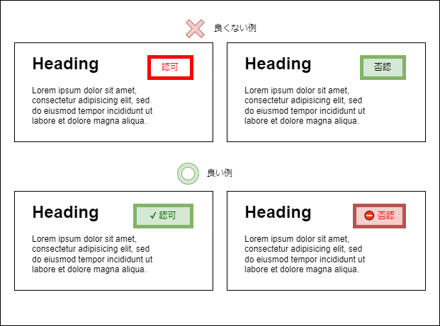
ブラウザバックとURLとコンテンツの関連
Webブラウザでは、ブラウザバックで前の画面が表示されることが当たり前です。当たり前のことなのですが、稀にそうでないものも見受けられます。
また、ブラウザバックを禁止しているところもありますが、20年前なら許されていましたが、現在ではそんなサイトは殆どありません。
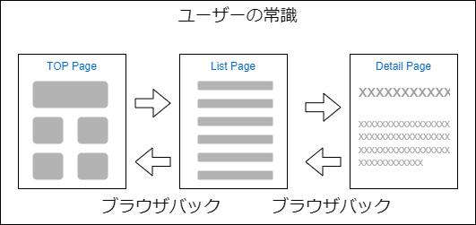
また、URLはコンテンツを示すもので、同一のURLなら同一のページを表示することがユーザーの常識でしょう。これもやはり稀にあります。
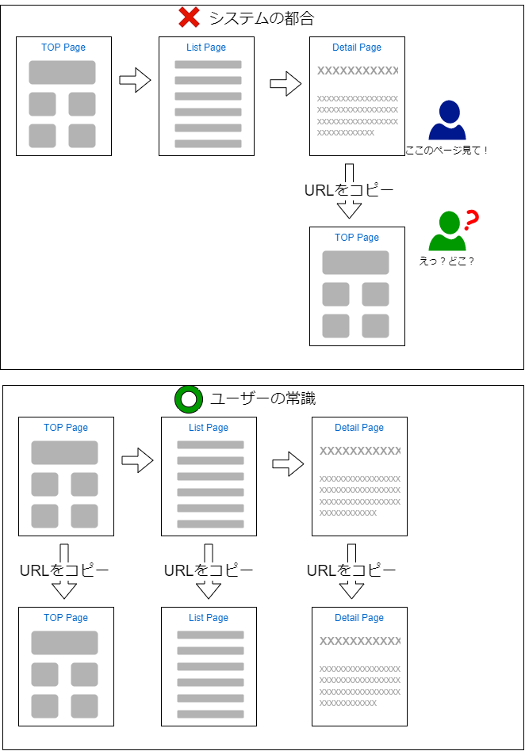
いずれもWebサイト、Webアプリケーションとしては至極当たり前の動きですが、これらのことが当たり前にできていないと、配慮できていない、技術力が無いのか・・・などと思われブラウンドイメージにも影響する可能性もあります。
SPA（シングル・ページ・アプリケーション）で画面の遷移をプログラムで書いてしまうと、このようなことに陥りやすいです。画面の遷移なのか、機能のアクションなのかを判断してコードを書く必要があります。
データではなく情報を伝える
開発者はしばしば、情報ではなくデータをそのまま表示するよう設計してしまします。
例えば、あるデータの登録日を表示するとして
2022/01/31 12:31:20
などとする場合がありますが、利用者は分や秒まで気にするでしょうか？其のようなユースケースがあるかもしれませんが、多くはないはずです。
また、それが1年前の物だったりすると、時間などもどうでもいいかもしれません。
逆に、当日だと分まで気にするかもしれません。
タイムスタンプを表現する方法として、多くのサービスでは、”今日12時30分”や、"先月11日"といった表現をすることが多いです。
そのほうが直感的で、ユーザーにとってわかりやすい場合が多いのではないでしょうか？
また、そうした場合フルの日時表示をタップやマウスオーバーで表示する機能があると、より良いでしょう。
利用者の記憶力やマニュアルに頼らない
人が短期間に記憶できる物の数は4つ、という心理学の定説があるそうです。それほど多くのことを覚えてくれません。
入力のガイダンスが必要な場合などは、その入力中は常に表示したり、入力中に参照しやくすするなどの工夫をしてください。
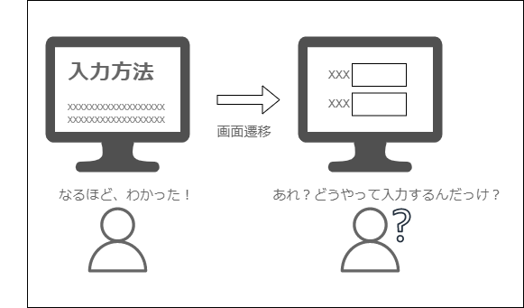
また、マニュアルも必ず読んでくれるとは限りません。マニュアルを読まずにユーザーが誤操作したとしても、それをユーザーのせいにしてはいけません。
マニュアルが無くても操作がわかる、直感的なUIが理想です。
利用者は無関係なことには注目しない
人は、いまやろうとしていることと無関係なことには注目しません。必要なものだけ表示したり、他を隠すなど工夫をすると、ユーザーが集中するのに役に立てます。
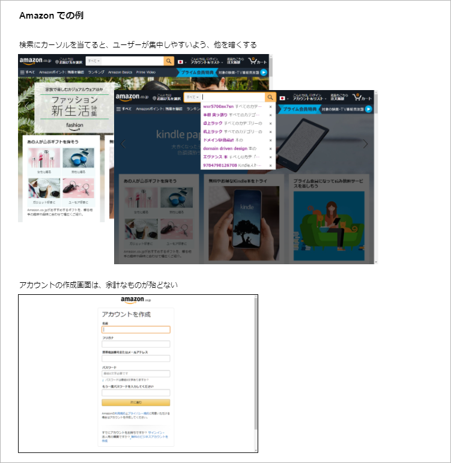
表示する情報が多い場合、小出しにすることも検討します。
例えば、タブで情報を切り替えるたり、入力の場合はいくつかのステップに分けるようにする、などです。この場合は、関連性のあるものをグループ化しましょう。
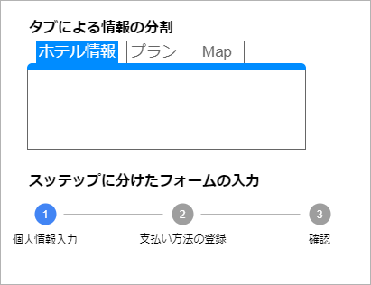
例を提示する
入力フォームで、入力上の注意がある場合その例を示しておくと、ユーザーは迷いません。
よくある例として、名前の欄に”カナ”とあれば、カタカナで、「かな」とあればひらがなで入力するのがわかります。
電話番号や郵便番号は、ハイフンを入れるのかどうか迷います。そういったときに例を示しておくと良いでしょう。
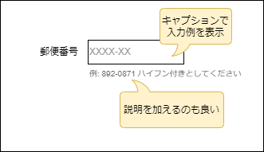
ユーザーの邪魔をしない
当たり前ですが、人は邪魔をされるのが嫌です。UIでもユーザーがやろうとしていることを邪魔するのはやめましょう。
例えば、ユーザーの意図しないポップアップで画面を隠してしまうのは良くないですが、やりがちなことです。
特にマウスオーバーでのポップアップは禁忌です。クリックするなどのユーザーの明確な意思でもって表示するようにします。
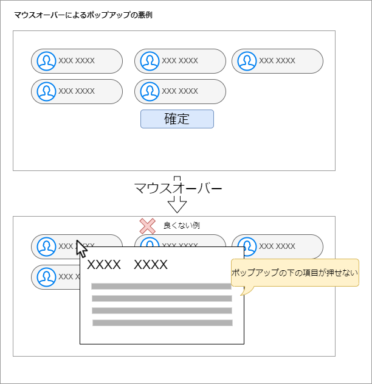
また、画面を表示するとき、時間差でコンテンツが読み込まれることがあります。ユーザーが文書を読んでいるときに、位置がずれると大変迷惑です。フォントの適用が遅くなっても、この現象が発生することがあります。
これを、レイアウトシフトと呼び、Webページデザインにおけるバットパターンです。
フォントは先読みする、画像や後から読み込まれる領域は、予め大きさを指定しておくなどの工夫が必要です。
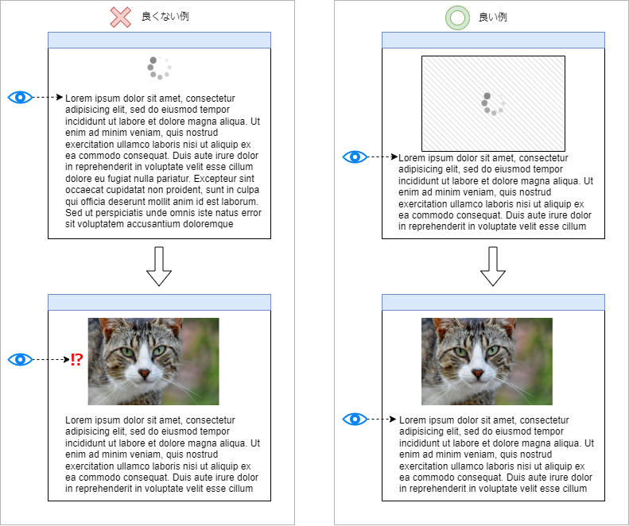
Next.js などのフレームワークでは、これらの対策を自動で行ってくれる機能があります。こういった機能をもっているかを、フレームワークの選定の基準にしても良いでしょう。
顕著な手がかりを作る
ユーザーに注目してもらいたいものや、ユーザーが手がかりになるものについては、それを目立たせることで操作をスムースにできます。
ボタンが並んでいる場合、重要なもの、よく使われるものなどは、他と区別します。
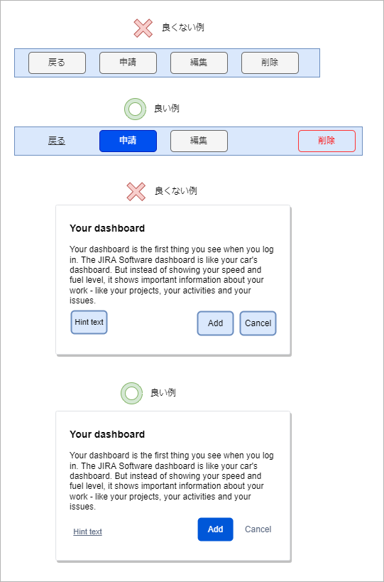
アクションでできることを説明する
ボタンの名前は名詞だけ、アイコンだけだとユーザーに意図が伝わりにくいです。
その目的や押した後の結果を動詞で書かれていると、ユーザーが迷いにくいでしょう。
ボタンの名前で混乱する例として、よく登場するのが「キャンセルのキャンセル問題」です。ボタンを押したらどうなるのか、明示することで混乱は起きません。
下の例では、ボタンのキャンセルと予約のキャンセルの意味が異なっていますが、同じ「キャンセル」という言葉を使っているので混乱します。
確認ダイアログは、普遍的なものでそのボタンも決まりきったものですが、言葉の使い方には気をつけるようにしましょう。
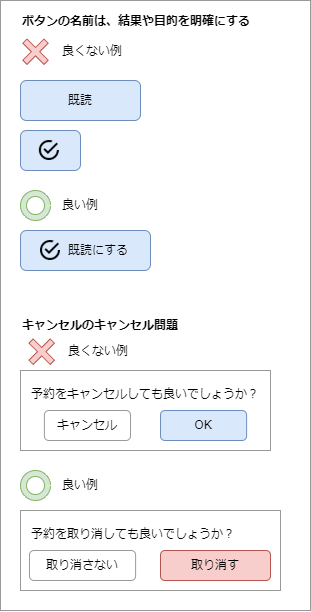
モバイルデバイスからの利用を想定する
PCを使って開発していると、どうしても広い画面でのUIを設計しがちですが、初めからスマートフォンやタブレットなどの利用も想定しておくべきです。
後から、それらに対応しようとすると、大変な労力が必要となります。
Tailwind CSSなどレスポンシブデザインに対応できるUIライブラリを使用することをお勧めしますが、ツールを入れたからといって勝手にモバイル対応になるわけではありません。設計の段階で、ある程度見込んでおくべきです。
また見た目だけではなく、マウスで操作するとは限らない、ということにも注意します。例えば、マウスオーバーによるポップアップで情報を表示する仕組みがあった場合、 モバイルで実現することができません。
また、PCで提供している操作を、フリップ操作を使った操作に置き換える、といったデバイスにあった UI も検討すべきでしょう。
他のサービスを参考にする
インターネットには、様々なサービスが展開されています。著名なサービスは、UIが良く検討されていて参考になるものも多いです。
普段何気なく使っている UI をじっくり観察、分析してみるのも非常に勉強になります。
また、Google、Apple、マイクロソフトなどは独自の UI ガイドラインを公開しています。
これらも非常に参考になるので、目を通しておくと良いでしょう。
- Material Design
- Human Interface Guidelines - Design - Apple Developer
- Windows アプリの設計とコーディング - Windows apps | Microsoft Docs
事前にユーザーの想定とシナリオを定義する
UX/UI の設計を始める前に、利用者がどういう人なのかをある程度想定（ペルソナ）して、その人が行う作業をシナリオを作成します。
そのペルソナが目的を達成できるかを考えることで、ユーザーの体験を想像しやすく、チーム内でも共通の理解を得られやすくなります。
ただ、ペルソナの設定が曖昧であったり、現実と大きく異なっていると、当然成果物にも大きな影響があります。
ペルソナを定義するため、実際のユーザーとなりえる人にリサーチが必要です。
そのリサーチは、その人にシステムや業務の「困りごと」を聞くのではなく、その人がどのような思考・行動をしているかを調べます。そうすることで、人が言語化できないニーズを拾い上げることが可能です。
UXデザインにおける行動観察とは？2つのマーケティング事例に見る企画への活用法 | えそらLLC UX ブログ
ツールによるアクセシビリティの計測をする
Chrome や Edge には、開発者ツールに[Lighthose]というツールがあります。
これは、パフォーマンスやアクセシビリティの動的・的解析ツールで、そのスコアや改善ポイントを教えてくれます。
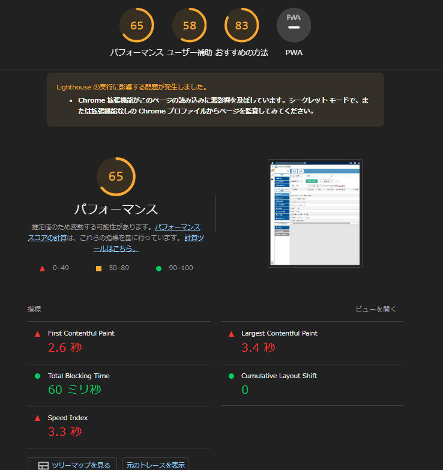
ユーザビリティをテストする
アプリケーションを使用してユーザーが目的を「気持ちよく」達成できるかを実際に操作して試しましょう。
しかし、アプリケーションができてからテストして問題がわかってもおそすぎます。
まず、UIのモックアップで試すべきです。そのためには、UI と機能を分けて開発できることが大事です。これは、後のアプリケーションの保守性にも大きく関係します。
テスターには前提となる最低限の情報だけ与えて操作してもらいましょう。また、複雑な業務の場合、熟練が必要なことがあります。何度か繰り返し、その熟練度を図ります。
その他
ソシオメディア | ヒューマンインターフェース ガイドライン から、よくあるケースを抜粋してみました。
- シンプルにする
- 簡単にする
- ユーザーの言葉を使う
- ユーザーの記憶に頼らない
- ショートカットを用意する
- 名詞→動詞 の操作順序
- 選択肢の文言は肯定文にする
- デフォルトボタンには具体的な動詞を用いる
- フリップフロップ問題を避ける
- 黙って実行する
- ◯（マル）✕（バツ）△（サンカク）等の記号を安易に使わない
- 色やフォントを使いすぎない
- ユーザーを教育するのではなくユーザーが学習できるようにする
- 文字の拡大に対応する
- ユーザーが自分のペースで作業できるようにする
まとめ
UX でどのような体験をしてほしいのか、それを達成するための UI はどうすれば良いのか思案することが重要です。
UIを考えるときには、何が重要でなのか、ユーザーは何がしたいのか、何を知りたいのかを考えなければなりません。
UIでベストをいきなり作るのは難しいですし、ちょっとした工夫でユーザーの評価が大きく変わることもあります。
継続的に UI の改善を考えていきましょう。